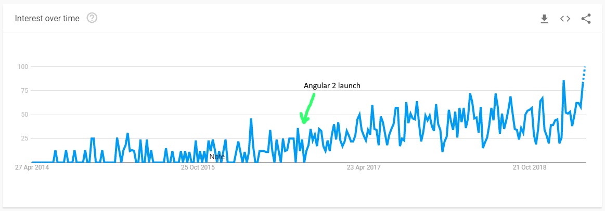
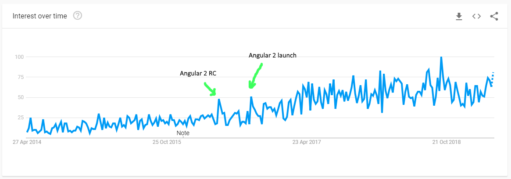

Before Angular team decided to turn the its community upside down with the release of Angular 2 in 2016, I did not think Typescript would take off beyond a small loyal group. Having been developed internally my Microsoft, the open source community was wary. But then, the unlikely thing happened, Microsoft and Google joined forces to create Angular (2…) with TypeScript support out of the box. By default.
You can imagine this gave TypeScript a strong boost in popularity.

Angular received some initial backlash from the drastic changes that were introduced, not just due to Typescript, but also from drastic changes in syntax. The initial disappointment of AngularJS fans overshadowed the drastic improvements in performance and new features like Dependency Injection and Lazy Loading of components.

And yet, Angular survived and is doing quite well. This was helped in part by the oncoming pressure from Javascript ES2015/ES6, developers had to learn new things and learn they did.
Making the hard choice
So, which should you choose? Like with every other question in technology, it depends.
- Browser support: TypeScript is not supported by any browser out there, thus a transpiler has to be used to transpile the code into JavaScript ES5. Seems like an extra step right? Well, it looks like ES6 suffers from the same problem. As of writing, the marketshare of browsers that support ES6 well is not great enough to use ES6 in production, thus you guessed it, a transpiler still has to be used. Therefore the browser support point is moot.
- To Type or not to Type: That is the question? This point will probably make up most of your decision making. This is where I think TypeScript truly shines. Typed code while slightly more verbose, results in code that is far less error prone. Having strict types allows the compiler to notify the developer of any type mismatching and other type related problems during development, instead of during testing. In addition, web development IDEs like WebStorm and VS Code among others, have excellent plugins and autocomplete capabilities that are far better than those for vanilla javascript.
- Future of TypeScript: Another extremely important factor to consider, when choosing a technology is its future. Anyone with a few years of professional experience knows how painful it is to use a library or technology that is no longer supported and there are still bugs that need to be fixed. Thankfully, TypeScript is not one of those cases. Adoption of types is only increasing (so if you thought of not learning TypeScript because it will never take off, down a quality Lagger and go learn it). As of writing, the upcoming and increasingly popular VueJS is already supporting TypeScript via its CLI, but is promising to significantly improve TypeScript integration with Class Based components and TSX support upon the next major release 3.x. Angular and React already have excellent support for TypeScript, so why pass on it?
- Why you may not want TypeScript: You think this will convert your back-end developers into front-end developers, or better yet full-stack! It won’t. Understanding Javascript concepts and its nuances is still very important.
If you still aren’t sold on adding TypeScript to your arsenal, consider the opinions of many via 2018 StackOverflow Annual Survey where TypeScript was rated #4 most loved programming language.